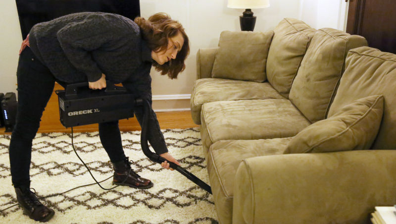

Yesterday 10:40am * SEE MORE:LOCAL

CINCINNATI—Reacting immediately to the sudden noise, surprised local woman Fran Copeland confirmed Monday that whoa, her vacuum cleaner just got ahold of something really big underneath the couch. “Oh, man, whatever just got sucked up into there must have been huge,” said the visibly startled 28-year-old, explaining that the big cracking noise the object made as it entered the vacuum was too loud to have been a food wrapper or a coin, so maybe it was a pen or a battery or something? “It rattled around in there for a while, too. I don’t think it was a fork. Could it have been a really big bug? Whatever it was, that thing was enormous.” At press time, Copeland had announced that holy shit, she’s gotta go unplug the vacuum, because now there’s some kind of weird burning smell coming from it.